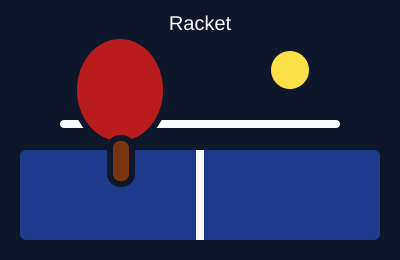
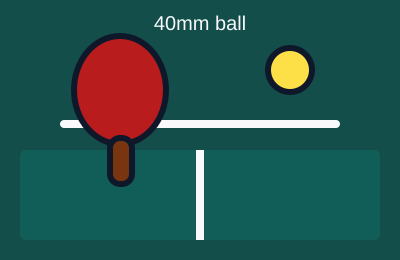
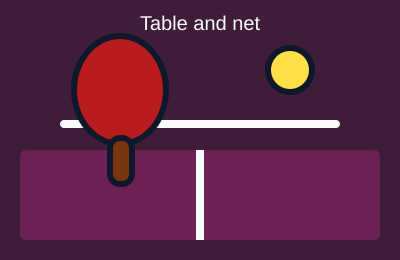

Essential Gear
Having the appropriate equipment is fundamental to enjoying and succeeding in table tennis. The sport requires minimal gear to begin playing.
Primary Components
- Paddles (Rackets): Composed of a wooden blade laminated with pimpled rubber sheets on both faces.
- Balls: Spherical celluloid or composite plastic balls measuring 40mm in diameter, weighing 2.7g.
- Table & Net: Standard 2.74m by 1.525m table divided by a 15.25cm high mesh net.
Gear Gallery




Choosing Your Racket
Beginners should select all-around paddles offering high control, while advanced players often customize their blades and rubbers for specialized spin and speed.